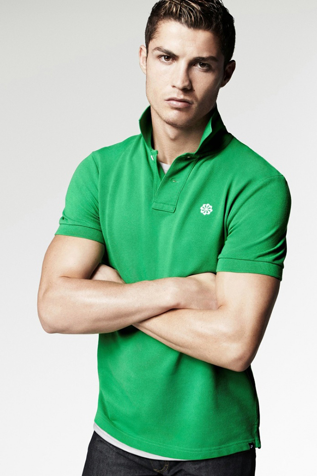

Cristiano Ronaldo was born on 5th February, 1985, in Funchal, Madeira, Portugal. Manchester United paid $12 million to sign him in 2003 record fee for a player of his age. In the 2004 FA Cup final, he scored Manchester's first three goals and helped them capture the championship. In 2008, he set a franchise record for goals scored. In 2009, Real Madrid paid a record $131 million for his services. Ronaldo is the youngest of four children born to Maria Dolores dos Santos and Jose Dinis Aveiro. He was named after then-U.S. president Ronald Reagan, a favorite actor of his father's.
Ronaldo became Manchester United's first-ever Portuguese player. Initially, he requested for the number 28 as his jersey number because he didn't feel that he could live up to the pressure of previous players such as George Best and David Beckham who wore the number 7 jersey.
"I am an ambitious player with only one objective: victory for my team."
During his free time, Cristiano enjoys cooking. He mentioned in an interview that he usually cooks before he leaves for his soccer practice. Because he is constantly training, Cristiano rarely has time to watch TV. If he does get the time to watch, he says he loves watching one of the local Portuguese game show which is mostly about trivia questions. Cristiano is an avid learner and he takes interest in learning new things everyday. Among Cristiano's biggest pet peeves are smoking, people who don't make an effort and dishonesty.